Repair Procedures
Disassembly
Engine removal is required for this procedure.
CAUTION:
- Use fender covers to avoid damaging painted surfaces.
- To avoid damaging the cylinder head, wait until the engine coolant temperature drops below normal temperature before removing it.
- When handling a metal gasket, take care not to fold the gasket or damage the contact surface of the gasket.
- To avoid damage, unplug the wiring connectors carefully while holding the connector portion.
NOTE:
- Mark all wiring and hoses to avoid misconnection.
- Turn the crankshaft pulley so that the No.1 piston is at TDC (Top dead center).
1. Remove the engine assembly from the vehicle.
2. Remove the transaxle assembly from the engine assembly.
3. Manual transaxle: Remove the flywheel (A).
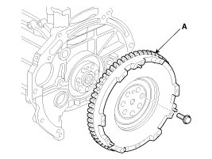
Automatic transaxle: Remove the drive plate (A) and the adapter plate (B).
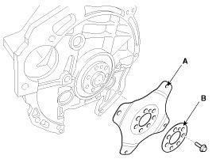
4. Fix the engine to an engine stand for disassembly.
5. Remove the intake manifold and exhaust manifold.
6. Remove the timing chain including the drive belt, the cylinder head cover, the alternator and the timing chain cover.
7. Remove the cylinder head assembly.
8. Remove the A/C compressor.
9. Remove the water pump assembly.
10. Remove the water inlet fitting and the thermostat assembly.
11. Remove the knock sensor (A).
12. Remove the OPS (Oil pressure switch) (B).
13. Remove the CKPS (Crankshaft position sensor) (C).
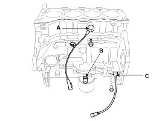
14. Remove the oil filter.
15. Remove the oil screen.
16. Remove the rear oil seal (A).
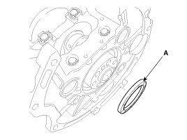
17. Remove the lower crankcase.
(1) Remove the lower crankcase mounting bolts.
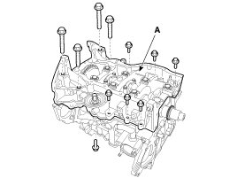
(2) Remove the main bearing cap bolts.
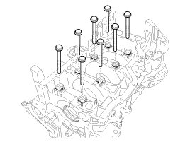
18. Check the connecting rod side clearance.
19. Check the connecting rod bearing oil clearance.
20. Remove piston and connecting rod assemblies.
(1) Using a ridge reamer, remove all the carbon from the top of the cylinder.
(2) Push the piston and connecting rod assembly with upper bearing through the top of the cylinder block.
NOTE:
- Keep the bearings, connecting rod and cap together.
- Arrange the piston and connecting rod assemblies in the correct order.
21. Check the connecting rod bearing oil clearance.
22. Check the crankshaft end play.
23. Lift the crankshaft (A) out of the engine, being careful not to damage journals.
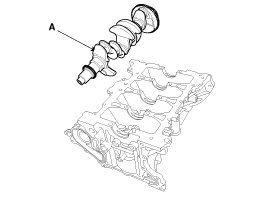
NOTE:
Arrange the main bearings and thrust bearings in the correct order.
24. Check fit between piston and piston pin. Try to move the piston back and forth on the piston pin. If any movement is felt, replace the piston and pin as a set.
25. Remove piston rings.
(1) Using a piston ring expander, remove the 2 compression rings.
(2) Remove 2 side rails and the oil ring by hand.
NOTE:
Arrange the piston rings in the correct order.
26. Remove the snap rings and then disassemble the connecting rod from the piston.
Inspection
Connecting Rod
1. Check the connecting rod side clearance.
Using a feeler gauge, measure the end play while moving the connecting rod back and forth.
A. If out-of-tolerance, install a new connecting rod.
B. If still out-of-tolerance, replace the crankshaft.
Side clearance
Standard: 0.10 - 0.25 mm (0.0039 - 0.0098 in.)
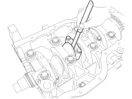
2. Check the connecting road bearing oil clearance.
(1) Check the matchmarks on the connecting rod and cap are aligned to ensure correct reassembly.
(2) Remove 2 connecting rod cap bolts.
(3) Remove the connecting rod cap and lower bearing.
(4) Clean the crank pin and bearing.
(5) Place a plastigage across the crankshaft pin journal.
(6) Reinstall the lower bearing and cap, and torque the bolts.
Tightening torque
1st step:
17.7 - 21.6 N.m (1.8 - 2.2 kgf.m, 13.0 - 15.9 lb-ft)
2nd step: 88 - 92°
NOTE:
Do not turn the crankshaft.
(7) Remove the connecting rod cap and lower bearing.
(8) Measure the width of the plastigage at its widest point.
Oil clearance:
0.028 - 0.046 mm (0.00110 - 0.00181 in.)
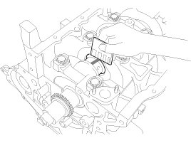
(9) If the measurement from the plastigage is too wide or too narrow, remove the upper and lower bearing and then install new bearings with the same color mark. Recheck the oil clearance.
CAUTION:
Do not file, shim, or scrape the bearings or the caps to adjust clearance.
(10) If the plastigage shows the clearance is still incorrect, try the next larger or smaller bearing. Recheck the oil clearance.
NOTE:
If the proper clearance cannot be obtained by using the appropriate larger or smaller bearings, replace the crankshaft and repeat the check procedure.
CAUTION:
If the marks are indecipherable because of an accumulation of dirt and dust, do not scrub them with a wire brush or scraper. Clean them only with solvent or detergent.
Connecting Rod Identification Mark
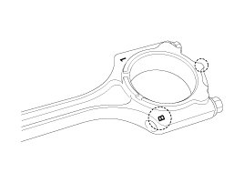
Connecting Rod Specifications
Crankshaft Pin Identification Mark
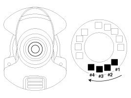
NOTE:
Conform to read stamping order as shown arrow direction from #1.
Crankshaft Specifications
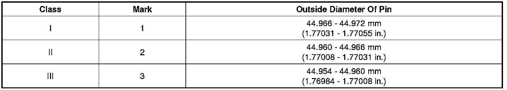
Connecting Rod Bearing Identification Mark
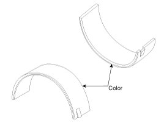
Connecting Rod Bearing Specifications
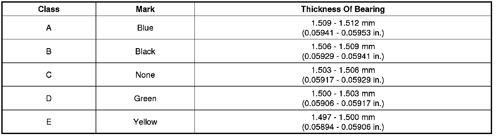
(11) Select a connecting rod bearing using selection chart.
Selection Chart For Connecting Rod Bearings
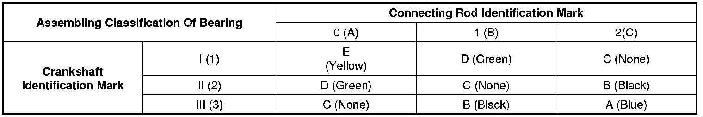
3. Check the connecting rods.
(1) When reinstalling, make sure that cylinder numbers put on the connecting rod and cap at disassembly match. When a new connecting rod is installed, make sure that the notches for holding the bearing in place are on the same side.
(2) Replace the connecting rod if it is damaged on the thrust faces at either end. Also if step wear or a severely rough surface of the inside diameter of the small end is apparent, the rod must be replaced as well.
(3) Using a connecting rod aligning tool, check the rod for bend and twist. If the measured value is close to the repair limit, correct the rod by a press. Any connecting rod that has been severely bent or distorted should be replaced.
Allowable bend of connecting rod:
0.05 mm (0.0020 in.) or less for 100 mm (3.94 in.)
Allowable twist of connecting rod:
0.10 mm (0.0039 in.) or less for 100 mm (3.94 in.)
NOTE:
When the connecting rods are installed without bearings, there should be no difference on side surface.
Crankshaft
1. Check the crankshaft bearing oil clearance.
(1) To check main bearing-to-journal oil clearance, remove the lower crankcase and lower bearings.
(2) Clean each main journal and bearing with a clean shop towel.
(3) Place one strip of plastigage across each main journal.
(4) Reinstall the lower crankcase and lower bearings, and then tighten the main bolts.
Tightening torque
1st step:
27.5 - 31.4 N.m (2.8 - 3.2 kgf.m, 20.3 - 23.1 lb-ft)
2nd step: 120 - 125°
NOTE:
Do not turn the crankshaft.
(5) Remove the lower crankcase and lower bearings.
(6) Measure the width of the plastigage at its widest point.
Oil clearance:
0.016 - 0.034 mm (0.00063 - 0.00134 in.)
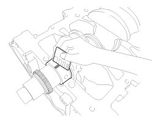
(7) If the plastigage measures too wide or too narrow, remove the upper and lower bearing and then install a new bearings with the same color mark. Recheck the oil clearance.
CAUTION:
Do not file, shim, or scrape the bearings or the caps to adjust clearance.
(8) If the plastigage shows the clearance is still incorrect, try the next larger or smaller bearing. Recheck the oil clearance.
NOTE:
If the proper clearance cannot be obtained by using the appropriate larger or smaller bearings, replace the crankshaft and start over.
CAUTION:
If the marks are indecipherable because of an accumulation of dirt and dust, do not scrub them with a wire brush or scraper. Clean them only with solvent or detergent.
Crankshaft Bore Identification Mark
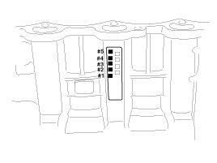
Letters have been stamped on the block as a mark for the size of each of the 5 main journal bores.
Use them, and the numbers or bar stamped on the crank (marks for main journal size), to choose the correct bearings.
Cylinder Block Specifications
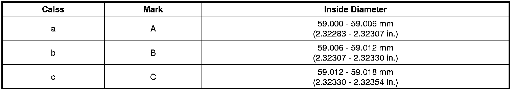
Crankshaft Journal Identification Mark
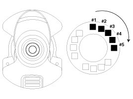
NOTE:
Conform to read stamping order as shown arrow direction from #1.
Crankshaft Specifications
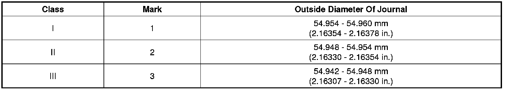
Crankshaft Bearing Identification Mark
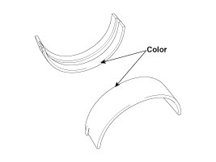
Crankshaft Bearing Specifications
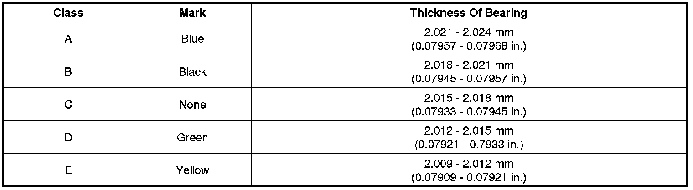
(9) Select a crankshaft bearing using the selection chart.
Selection Chart For Crankshaft Bearings
2. Check crankshaft end play.
Using a dial indicator, measure the thrust clearance while prying the crankshaft back and forth with a screwdriver.
If the end play is greater than maximum, replace the center bearing.
End play
Standard: 0.07 - 0.25 mm (0.0028 - 0.0098 in.)
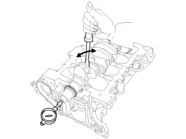
3. Inspect main journals and crank pins.
Using a micrometer, measure the diameter of each main journal and crank pin.
Main journal diameter:
54.942 - 54.960 mm (2.16307 - 2.16378 in.)
Crank pin diameter:
44.954 - 44.972 mm (1.76984 - 1.77055 in.)
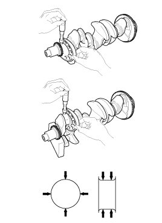
Cylinder Block
1. Remove gasket material.
Using a gasket scraper, remove all the gasket material from the top surface of the cylinder block.
2. Clean cylinder block
Using a soft brush and solvent, thoroughly clean the cylinder block.
3. Inspect top surface of cylinder block for flatness.
Using a precision straight edge and feeler gauge, measure the surface contacting the cylinder head gasket for warpage.
Flatness of cylinder block gasket surface
Standard:
Less than 0.05 mm (0.0020 in.) for total area
Less than 0.02 mm (0.0008 in.) for a section of 100 mm (3.9370 in.) X 100 mm (3.9370 in.)
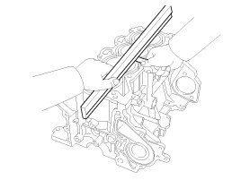
4. Inspect the cylinder bore
Visually check the cylinder for vertical scratches.
If deep scratches are present, replace the cylinder block.
5. Inspect the cylinder bore diameter.
Using a cylinder bore gauge, measure the cylinder bore diameter at position in the thrust and axial direction.
Cylinder bore diameter:
81.00 - 81.03 mm (3.1890 - 3.1902 in.)
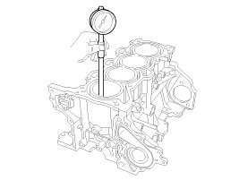
NOTE:
Measure position points (from the top of the cylinder block):
30 mm (1.1811 in.) / 60 mm (2.3622 in.) / 90 mm (3.5433 in.)
6. Check the cylinder bore size code on the cylinder block side surface.
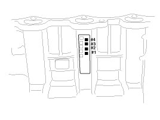
Cylinder Bore Inner Diameter
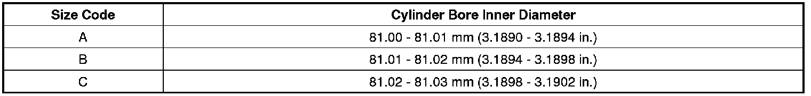
7. Check the piston size mark on the piston top face.
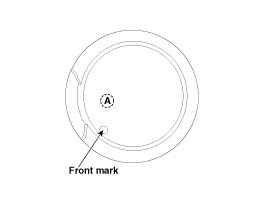
Piston Outer Diameter
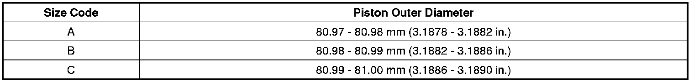
8. Select the piston related to cylinder bore class.
Piston-to-cylinder clearance:
0.02 - 0.04 mm (0.0008 - 0.0016 in.)
Piston And Piston Rings
1. Clean piston.
(1) Using a gasket scraper, remove the carbon from the piston top.
(2) Using a groove cleaning tool or broken ring, clean the piston ring grooves.
(3) Using solvent and a brush, thoroughly clean the piston.
NOTE:
Do not use a wire brush.
2. The standard measurement of the piston outside diameter is taken 35 mm (1.3780 in.) from top land of the piston.
Piston outside diameter:
80.97 - 81.00 mm (3.1878 - 3.1890 in.)
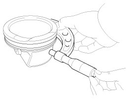
3. Calculate the difference between the cylinder bore inner diameter and the piston outer diameter.
Piston-to-cylinder clearance:
0.02 - 0.04 mm (0.0008 - 0.0016 in.)
4. Inspect the piston ring side clearance.
Using a feeler gauge, measure the clearance between new piston ring and the wall of ring groove.
If the clearance is greater than maximum, replace the piston.
Piston ring side clearance
[Standard]
No.1 ring:
0.040 - 0.080 mm (0.00157 - 0.00315 in.)
No.2 ring:
0.040 - 0.080 mm (0.00157 - 0.00315 in.)
Oil ring:
0.060 - 0.145 mm (0.00236 - 0.00571 in.)
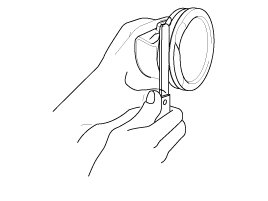
5. Inspect piston ring end gap.
To measure the piston ring end gap, insert a piston ring into the cylinder bore. Position the ring at right angles to the cylinder wall by gently pressing it down with a piston. Measure the gap with a feeler gauge.
If the gap exceeds the service limit, replace the piston rings. If the gap is too large, recheck the cylinder bore inner diameter. If the bore is over the service limit, the cylinder block must be replaced.
Piston ring end gap
[Standard]
No.1 ring: 0.15 - 0.30 mm (0.0059 - 0.0118 in.)
No.2 ring: 0.30 - 0.45 mm (0.0118 - 0.0177 in.)
Oil ring : 0.20 - 0.70 mm (0.0079 - 0.0276 in.)
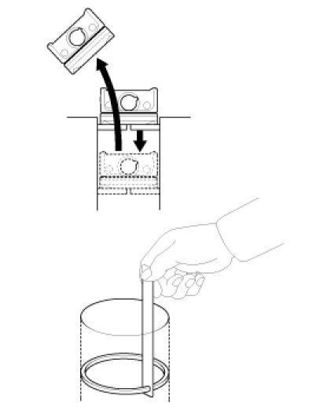
Piston Pins
1. Measure the diameter of the piston pin.
Piston pin diameter:
19.996 - 20.000 mm (0.78724 - 0.78740 in.)
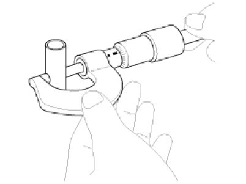
2. Measure the piston pin-to-piston clearance.
Piston pin-to-piston clearance:
0.004 - 0.013 mm (0.00016 - 0.00051 in.)
3. Check the clearance between the piston pin outer diameter and the connecting rod small end inner diameter.
Piston pin-to-connecting rod clearance:
0.010 - 0.025 mm (0.00039 - 0.00098 in.)
Reassembly
NOTE:
- Thoroughly clean all parts to be assembled.
- Before installing the parts, apply fresh engine oil to all sliding and rotating surfaces.
- Replace all gaskets, O-rings and oil seals with new parts.
1. Assemble the piston and the connecting rod.
(1) Install the snap ring (A) in one side of the piston pin hole.
(2) Align the piston front mark and the connecting rod front mark.
(3) Insert the piston pin (B) into the piston pin hole and the small end bore of connecting rod.
(4) Install the snap ring (C) in the other side after inserting the piston pin.
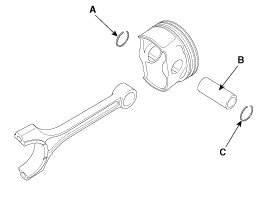
NOTE:
Apply a sufficient amount of engine oil to outer surface of the piston, inner surface of piston pin hole and small end bore of the connecting rod before inserting the piston pin.
CAUTION:
- Be careful not to damage and scratch the small end bore, piston pin hole and piston pin when inserting the piston pin.
- Set the snap ring firmly so that the snap ring can contact with the whole groove of the piston pin hole.
2. Install the piston rings.
(1) Install the oil ring spacer and 2 side rails by hand.
(2) Using a piston ring expander, install the 2 compression rings with the maker mark facing upward.
(3) Position the piston rings so that the ring ends are as shown. (The No.1 ring should be on the opposite side of the No.2 ring.)
Example)
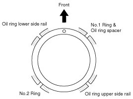
CAUTION:
Check to ensure that the oil ring can be turned smoothly.
3. Install the connecting rod bearings.
(1) Align the bearing claw with the groove of the connecting rod or connecting rod cap.
(2) Install the bearings (A) in the connecting rod and connecting rod cap (B).
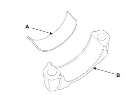
CAUTION:
Be careful not to change the position of bearing caps.
4. Install the crankshaft main bearings.
NOTE:
Upper bearings have an oil groove of oil holes; Lower bearings do not.
(1) Align the bearing claw with the groove of the cylinder block, and push in the 5 upper bearings (A).
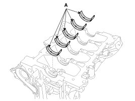
(2) Align the bearing claw with the groove of the lower crankcase (B), and push in the 5 lower bearings (A).
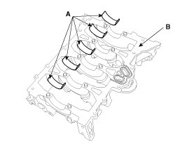
5. Install the thrust bearings.
Install the 2 thrust bearings (A) on both sides of the No.3 journal of the cylinder block with the oil groove facing out.
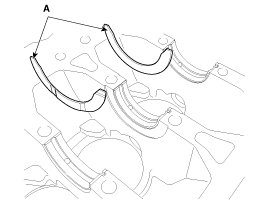
6. Place the crankshaft (A) on the cylinder block.
7. Apply liquid sealant on the top surface of the lower crankcase.
(1) Using a gasket scraper, remove all the old packing material from the gasket surfaces.
(2) The sealant locations on the lower crankcase and the cylinder block must be free of harmful foreign materials, oil, dust and moisture. Spraying cleaner on the surface and wiping with a clean duster.
(3) Assemble a new rubber gasket (A) on the top of lower crankcase.
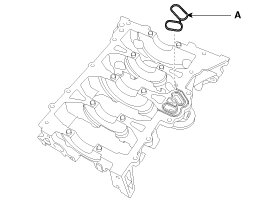
(4) Apply liquid sealant on the bottom of the cylinder block. Continuous bead of sealant should be applied to prevent any path from oil leakage.
Bead width:2.5 - 3.5 mm (0.10 - 0.14 in.)
Sealant:Threebond 1217H or equivalent
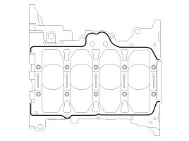
CAUTION:
- Assemble the lower crankcase within 5 minutes after applying sealant.
- The engine running or pressure test should not be performed within 30 minutes after assembling the lower crankcase.
- Excess sealant on application surface of sealant of following process should be removed before hardening.
- If the sealant is applied to the top surface of the lower crankcase, it should be the same position as the cylinder block.
- To prevent leakage of oil, apply sealant gasket on the inner threads of the bolt holes.
8. Place the lower crankcase on the cylinder block.
9. Install the main bearing cap bolts.
Using SST (09221-4A000), install and tighten the 10 main bearing cap bolts, in several passes, in the sequence as shown.
Tightening torque
1st step:
27.5 - 31.4 N.m (2.8 - 3.2 kgf.m, 20.3 - 23.1 lb-ft)
2nd step: 120 - 125°
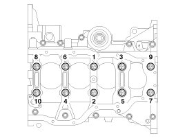
CAUTION:
- Do not reuse the bearing cap bolts.
- Do not apply engine oil on the bolt threads to achieve correct torque.
NOTE:
- The main bearing cap bolts are tightened in 2 progressive steps.
- If any of the bearing cap bolts is broken or deformed, replace it.
- Be sure to assemble the main bearing cap bolts in correct order.
10. Install the lower crankcase bolts, in several passes, in sequence as shown.
Tightening torque:
18.6 - 23.5 N.m (1.9 - 2.4 kgf.m, 13.7 - 17.4 lb-ft)
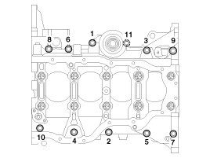
Check that the crankshaft turns smoothly.
11. Check the crankshaft end play.
12. Install the piston and connecting rod assemblies.
NOTE:
- Before installing the piston, apply a coat of engine oil to the ring grooves and cylinder bores.
- Install the piston and connecting rod assembly with the front marks facing the front of the engine.
(1) Install the ring compressor, check that the rings are securely in place, and then position the piston in the cylinder, and tap it in using the wooden handle of a hammer.
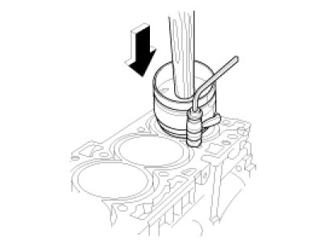
(2) Stop after the ring compressor pops free, and check the connecting rod-to-crank journal alignment before pushing the piston into place.
(3) Apply engine oil to the bolt threads. Install the rod caps with bearings, and tighten the bolts.
Tightening torque
1st step :
17.7 - 21.6 Nm (1.8 - 2.2 kgf.m, 13.0 - 15.9 lb-ft)
2nd step : 88 - 92°
CAUTION:
Do not reuse the connecting rod cap bolts.
NOTE:
- Using the SST (09221-4A000), tighten the bolts.
- Maintain downward force on the ring compressor to prevent the rings from expending before entering the cylinder bore.
13. Check the connecting rod end play.
14. Install a new rear oil seal.
(1) Apply engine oil to a new oil seal lip.
(2) Using SST (09231-H1100, 09214-2E000) and a hammer, tap in the oil seal (A) until the rear oil seal face is aligned with the cylinder block assembly rear face.
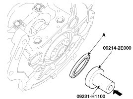
15. Install the oil screen.
16. Install the oil filter.
17. Install the CKPS (Crankshaft position sensor) (C).
Tightening torque:
9.8 - 11.8 N.m (1.0 - 1.2 kgf.m, 7.2 - 8.7 lb-ft)
18. Install the OPS (Oil pressure switch) (B).
Tightening torque:
9.8 - 11.8 N.m (1.0 - 1.2 kgf.m, 7.2 - 8.7 lb-ft)
19. Install the knock sensor (A).
Tightening torque:
18.6 - 23.5 N.m (1.9 - 2.4 kgf.m, 13.7 - 17.4 lb-ft)
20. Install the water inlet fitting and the thermostat assembly.
21. Install the water pump assembly.
22. Install the A/C compressor.
23. Install the cylinder head assembly.
24. Install the timing chain including the drive belt, the cylinder head cover, the alternator and the timing chain cover.
25. Install the intake manifold and exhaust manifold.
26. Remove the engine from an engine stand for assembly.
27. Manual transaxle: Install the flywheel (A).
Automatic transaxle: Install the drive plate (A) and the adapter plate (B).
Tightening torque:
117.7 - 127.5 N.m (12.0 - 13.0 kgf.m, 86.8 - 94.0 lb-ft)
CAUTION:
Do not reuse the bolts.
28. Assemble the transaxle assembly to the engine assembly.
29. Install the engine and transaxle assembly to the vehicle.